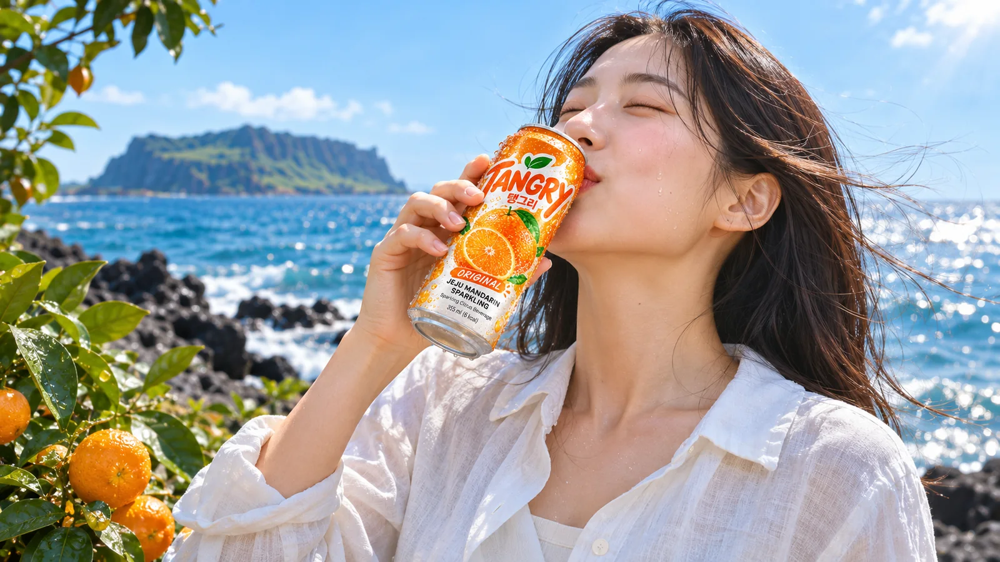
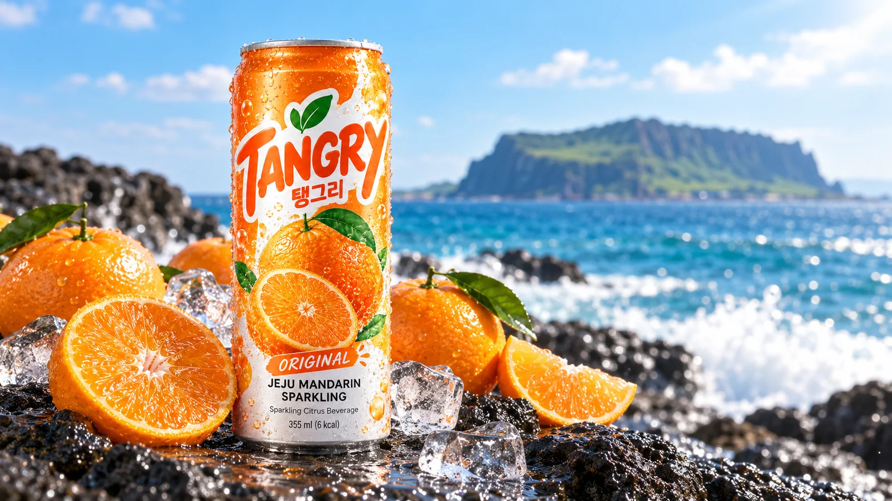

01 / ORIGIN
01 / ORIGINMandarin
제주 감귤과 자연 환경으로 원재료의 이미지를 먼저 전달.
AI BEVERAGE BRAND CAMPAIGN · 2026
제주 감귤의 탱글한 에너지를 탄산 브랜드로 확장한 가상 F&B 브랜딩 프로젝트.

TANGRY ORIGINAL — JEJU MANDARIN SPARKLING.
제주 감귤을 모티브로 한 가상 탄산음료 브랜드를 기획하고, 제품 아이덴티티와 캔 패키지 시스템부터 광고용 제품 비주얼과 TVC 장면 흐름까지 설계했습니다.
완성된 광고 한 편만 만드는 것이 아니라, 하나의 제품이 실제 캠페인으로 확장될 수 있도록 브랜드의 시각 언어와 장면별 연출을 일관되게 구축하는 데 초점을 맞췄습니다.
오렌지·화이트·그린·스카이블루를 중심으로 감귤의 생동감과 탄산의 청량함이 동시에 느껴지는 브랜드 톤을 설계했습니다.
젊고 경쾌한 인상을 유지하면서도 제품 패키지와 광고 화면에서 한눈에 브랜드가 인식되도록 컬러 대비와 타이포그래피를 설계했습니다.
정면뿐 아니라 측면과 후면까지 이어지는 연속적인 라벨 시스템을 고려해 제품을 하나의 완성된 패키지로 설계했습니다.


실제 음료 광고처럼 보이도록 과일의 질감, 차가운 알루미늄 캔의 응결, 탄산감, 제주 자연의 빛과 표면 디테일을 중심으로 비주얼을 개발했습니다.




최종 영상 제작 전, 감귤의 원물감에서 시작해 제품 인지와 음용 순간까지 연결되는 광고 흐름을 장면 단위로 설계했습니다.
01 / ORIGIN제주 감귤과 자연 환경으로 원재료의 이미지를 먼저 전달.
02 / ENERGY과즙과 탄산의 움직임으로 브랜드의 에너지를 시각화.
03 / PRODUCT제품과 로고를 명확하게 인지시키는 키비주얼 구간.
04 / ACTION캔 오픈 매크로와 음용 컷으로 청량한 사용 경험을 연결.
제품과 브랜드명이 남는 밝고 산뜻한 엔딩 팩샷.
브랜드를 먼저 정의한 뒤 패키지와 제품 레퍼런스를 고정하고, 장면별 목적에 맞춰 광고 비주얼을 확장하는 방식으로 제작했습니다.
제주 감귤 스파클링 제품 콘셉트와 브랜드 톤 설정
캔 정면·측면·후면까지 이어지는 패키지 비주얼 시스템 구축
제품 비율, 로고, 감귤 그래픽을 유지한 광고용 제품 이미지 개발
원물 → 탄산감 → 제품 → 오픈 → 음용 → 엔딩으로 이어지는 광고 흐름 설계
매크로, 응결, 제주 자연, 모델 음용 컷 등 장면별 이미지 제작
AI CREATIVE LAB / NEXT PROJECT